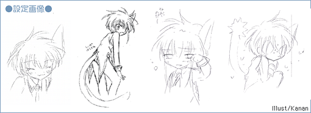
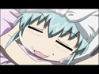
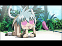

|
|||||||||

| ●What's ナノナノ |
|
――コミック＆ゲームサイド（GAII) 明るい言動と行動で場を盛り上げるムードメーカー的な存在｡実は全身がナノマシンで構成された「意識をもつナノマシン」という稀有な存在であり、ナノマシンテクノロジーにより怪我を治療することができる。 ――アニメサイド（GAる～ん） ルーンエンジェル隊最年少？ 明るい言動と行動でエンジェル隊を盛り上げるムードメーカー。ナノマシンによる治療を得意としている。外見は幼い少女のようだが実は意志をもったナノマシンの集合体。しっぽと、語尾に「なのだ」をつけるのが特徴。良く机の上で丸まっていたりと行動が「猫っぽい」 |
|  |  | ||
© BROCCOLI